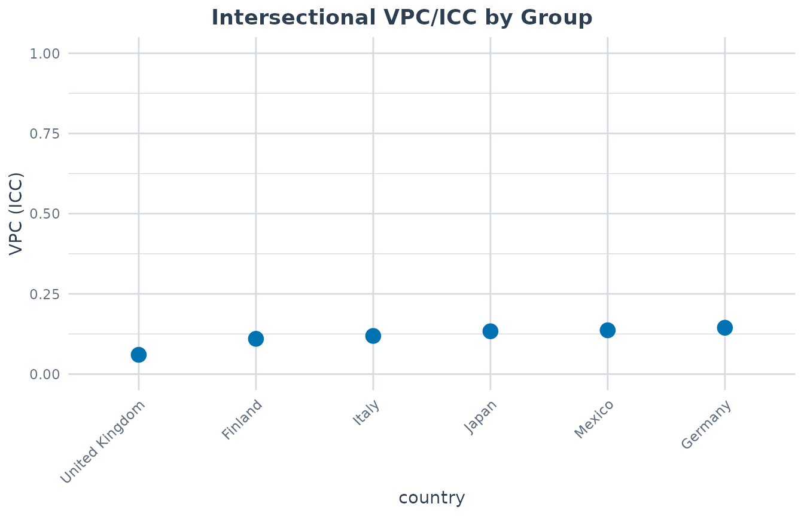
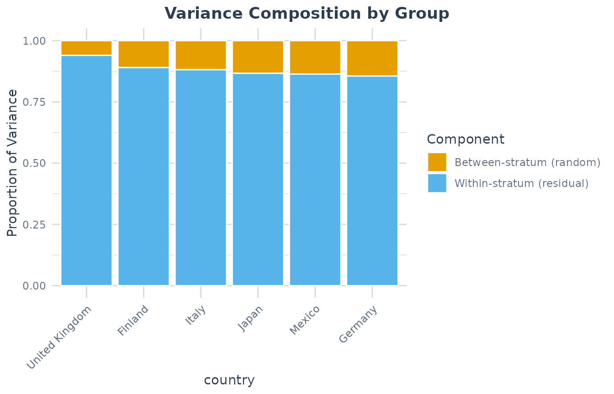
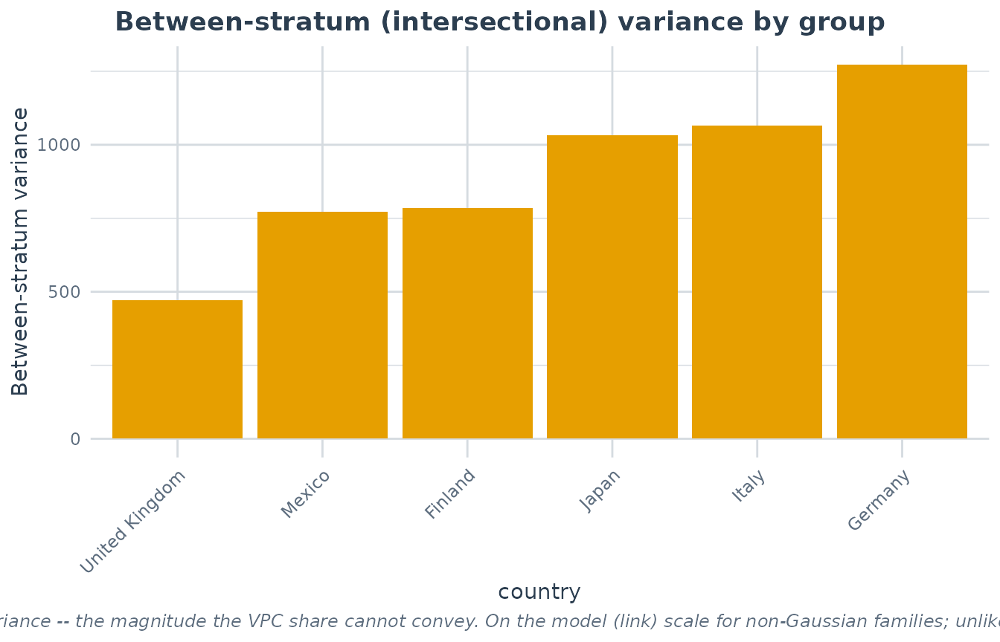
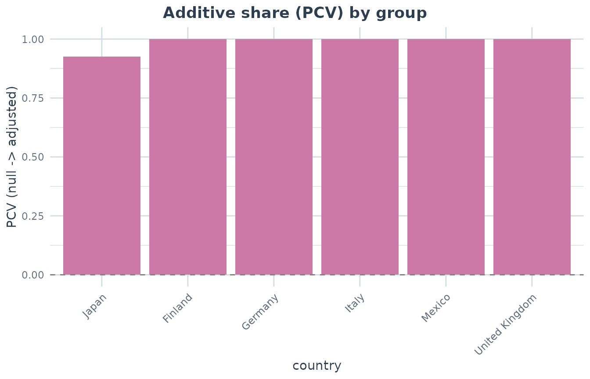

Comparing Intersectional Inequality Across Groups
Hamid Bulut
2026-07-04
Source:vignettes/group_comparison.Rmd
group_comparison.RmdIntroduction
MAIHDA is often used to estimate how much outcome variation lies between intersectional strata in a single population. The group comparison workflow asks a related contextual question: is intersectional inequality larger in some higher-level groups than in others?
Examples include comparing gender-by-class inequality across
countries, race-by-gender inequality across regions, or intersectional
inequality across survey waves. In the MAIHDA package, this is handled
by maihda() with a group argument or, when you
want only the group comparison table, by
compare_maihda_groups().
Example data: countries, gender, and socioeconomic status
The package includes maihda_country_data, a teaching
dataset based on a balanced subset of OECD PISA 2018 data. Each row is a
student, the outcome is a mathematics score, and the intersectional
strata are formed by gender and ses.
The higher-level grouping variable is country, which
lets us ask whether the VPC/ICC for gender-by-SES inequality differs
across countries.
library(MAIHDA)
data("maihda_country_data")
country_counts <- as.data.frame(table(maihda_country_data$country))
names(country_counts) <- c("country", "n")
country_counts
#> country n
#> 1 Finland 600
#> 2 Germany 600
#> 3 United Kingdom 600
#> 4 Italy 600
#> 5 Japan 600
#> 6 Mexico 600
table(maihda_country_data$gender, maihda_country_data$ses)
#>
#> Low Medium High
#> female 619 571 588
#> male 581 629 612One-call workflow
Use maihda() when you want the full decomposition and
the group comparison in one object. The formula below defines six
intersectional strata (gender:ses) and asks for a separate
decomposition within each country. Because maihda() is a
two-model workflow, it fits both the null and the adjusted model overall
and within each country, so the group table also carries a
per-country PCV (the additive share of that country’s
intersectional inequality).
# gender + ses are written as additive fixed effects (the adjusted model); maihda()
# derives the null by dropping them, both overall and within each country.
analysis <- maihda(
math ~ gender + ses + (1 | gender:ses),
data = maihda_country_data,
group = "country"
)
#> boundary (singular) fit: see help('isSingular')
#> boundary (singular) fit: see help('isSingular')
#> boundary (singular) fit: see help('isSingular')
#> boundary (singular) fit: see help('isSingular')
#> boundary (singular) fit: see help('isSingular')
#> boundary (singular) fit: see help('isSingular')
analysis
#> MAIHDA Analysis
#> ===============
#>
#> Null formula: math ~ (1 | stratum)
#> Adjusted formula:math ~ gender + ses + (1 | stratum)
#> Engine: lme4 | Family: gaussian
#> VPC/ICC (null): 0.1493
#> PCV (null -> adjusted): 1.0000
#> Between-stratum variance: 1124.7631 (null) -> 0.0000 (adjusted)
#> ~100.0% of the between-stratum variance is additive (the dimensions' main
#> effects); the remainder is the between-stratum variance remaining after the
#> additive main effects -- a model-dependent quantity
#> Strata: 6
#> Intersectional interactions: 0 of 6 strata flagged (95% interval, BH-adjusted)
#>
#> Group comparison by 'country':
#> MAIHDA Group Comparison
#> =======================
#>
#> Group variable: country
#> Engine: lme4 | Family: gaussian | Strata: shared/global
#>
#> group n n_strata vpc var_between var_other var_residual pcv
#> Finland 600 6 0.10994 785.8 0 6361 1
#> Germany 600 6 0.14448 1271.6 0 7529 1
#> Italy 600 6 0.11890 1065.3 0 7895 1
#> Japan 600 6 0.13344 1032.3 0 6704 1
#> Mexico 600 6 0.13649 771.5 0 4881 1
#> United Kingdom 600 6 0.06011 470.5 0 7357 1
#> var_between_adjusted var_between_adjusted_ml status
#> 0.000e+00 0.000e+00 ok
#> 0.000e+00 0.000e+00 ok
#> 0.000e+00 0.000e+00 ok
#> 3.782e-12 3.022e-12 ok
#> 0.000e+00 0.000e+00 ok
#> 0.000e+00 0.000e+00 ok
#>
#> Use summary() for variance components and plot(type = ...) for figures.
#> The printed report includes the overall VPC/ICC and PCV first, then
the country-level comparison. The group comparison is also stored in
analysis$groups, so it can be inspected or saved as a
regular data frame.
group_results <- as.data.frame(analysis$groups)
group_results[order(group_results$vpc, decreasing = TRUE),
c("group", "n", "n_strata", "vpc", "var_between",
"var_residual", "pcv", "status")]
#> group n n_strata vpc var_between var_residual pcv status
#> 2 Germany 600 6 0.14448319 1271.5810 7529.311 1 ok
#> 5 Mexico 600 6 0.13649162 771.5419 4881.127 1 ok
#> 4 Japan 600 6 0.13344144 1032.3346 6703.902 1 ok
#> 3 Italy 600 6 0.11889899 1065.3186 7894.544 1 ok
#> 1 Finland 600 6 0.10994297 785.7610 6361.226 1 ok
#> 6 United Kingdom 600 6 0.06011138 470.5471 7357.372 1 okIn this example all countries have 600 students and all six
gender-by-SES strata are populated. Higher VPC/ICC values indicate that
a larger share of mathematics score variation lies between the
intersectional strata within that country; the pcv column
shows how much of each country’s between-stratum variance is the
additive sum of the gender and SES main effects (so a lower PCV flags
inequality that is more intersection-specific).
Visualizing the comparison
The group VPC plot orders countries by the estimated intersectional
VPC/ICC. If the comparison was run with bootstrap = TRUE,
the same plot will include per-country confidence intervals.
plot(analysis, type = "group_vpc")
The variance-components view shows the same comparison as shares of the total model variance. The orange segment is the between-stratum component, which is the numerator of the VPC/ICC.
plot(analysis, type = "group_components")
Share versus magnitude
The VPC/ICC is a ratio: the share of the unexplained variation that lies between strata. A larger VPC therefore does not necessarily mean a larger amount of between-stratum (intersectional) variation – it can also reflect a smaller residual variance. Two countries with the same absolute between-stratum variance can have very different VPCs, and vice versa.
The "group_between_variance" view plots the absolute
between-stratum variance (var_between) directly, so it can
be read alongside the VPC to separate the share of inequality
from its magnitude.
plot(analysis, type = "group_between_variance")
For non-Gaussian models this variance is on the model (link) scale, and unlike the VPC it is not normalised by the residual variance.
Additive share (PCV) by group
The "group_pcv" view bars each country’s PCV – the
proportional drop in between-stratum variance once the gender and SES
main effects are added. A high bar means that country’s intersectional
inequality is largely the additive sum of its parts; a low (or negative)
bar flags inequality that is more intersection-specific. (With strata
defined by a single dimension there is no intersection to decompose, so
this view and the pcv column are unavailable.)
plot(analysis, type = "group_pcv")
Direct group comparison
If you only need the group comparison table and plots, call
compare_maihda_groups() directly. This fits the same
per-country null and adjusted models used by
maihda(group = "country") (the pcv column
appears when the strata have at least two dimensions).
group_cmp <- compare_maihda_groups(
math ~ 1 + (1 | gender:ses),
data = maihda_country_data,
group = "country"
)
group_cmp
plot(group_cmp, type = "vpc")
plot(group_cmp, type = "components")
plot(group_cmp, type = "pcv")By default, shared_strata = TRUE. That means the
gender:ses strata are defined once on the pooled data, then
reused in every country. A “female:Low” stratum therefore refers to the
same type of stratum in each country, which makes the stratum
definitions comparable across countries.
Shared definitions are necessary but not by themselves sufficient for
the VPCs to be directly comparable. A given country may not
contain every stratum, so two countries’ VPCs can be estimated over
different sets of populated strata. When that happens,
compare_maihda_groups() issues a warning, and the VPCs
should be read with that caveat in mind (alongside the
n_strata column) rather than as strictly like-for-like.
Set shared_strata = FALSE only when you intentionally
want each group to rebuild its own strata. In that case, stratum
identities are no longer shared across groups, so interpretation should
focus on within-group structure rather than direct stratum-to-stratum
comparison.
Adding bootstrap intervals
For publication-oriented summaries, you can request per-group
parametric bootstrap confidence intervals with the lme4
engine. This can take noticeably longer because each group requires
repeated model refits, so the example is not run when the vignette is
built.
group_cmp_boot <- compare_maihda_groups(
math ~ 1 + (1 | gender:ses),
data = maihda_country_data,
group = "country",
bootstrap = TRUE,
n_boot = 500
)
plot(group_cmp_boot, type = "vpc")